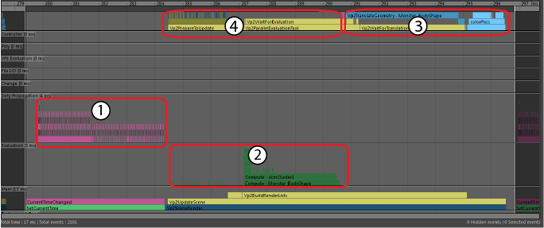
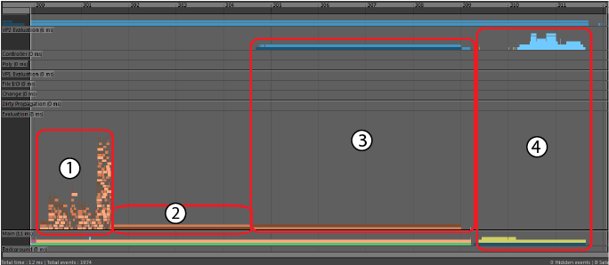
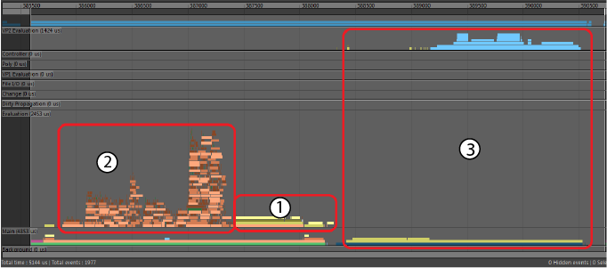
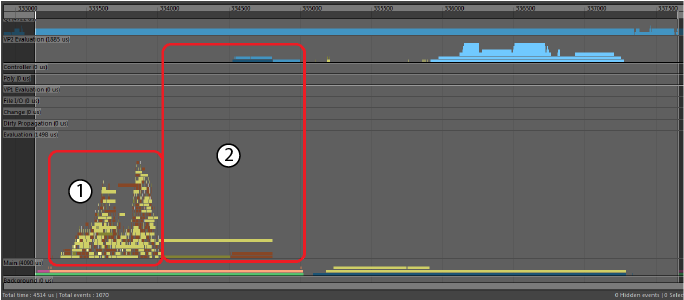
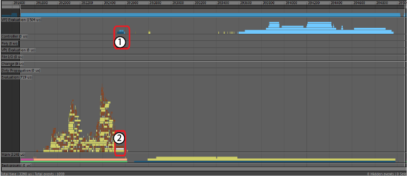
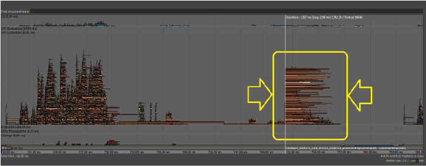
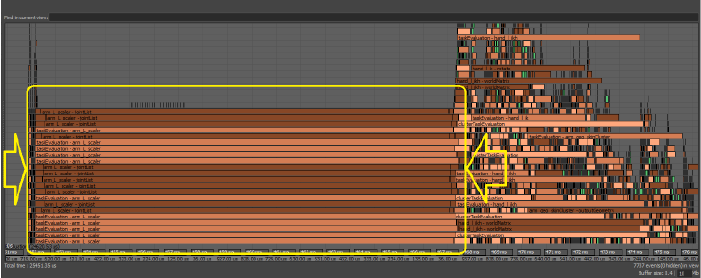
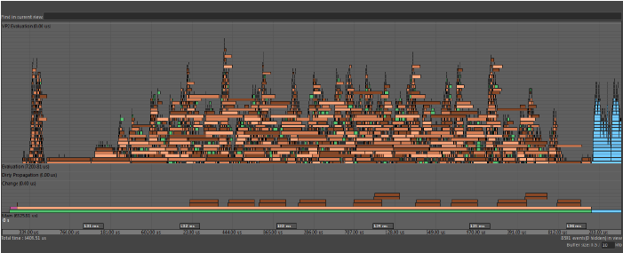
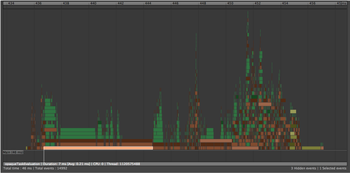

以下示例显示如何根据图表颜色和类别解释分析，以及 Maya 中的每个性能优化如何影响场景性能。所有这些示例均来自 Maya 2019 中的同一简单 FK 角色播放。
DG 解算(DG Evaluation)

此“DG 解算”(DG Evaluation)分析显示多种类型的事件：
- “脏传播”(Dirty Propagation)类别中的粉红色和紫色“脏传播”(Dirty Propagation)事件。
- “解算”(Evaluation)类别中的深绿色“拉力解算”(Pull Evaluation)事件。
- “VP2 解算”(VP2 Evaluation)类别中的蓝色“VP2 拉力平移”(VP2 Pull Translation)事件和浅蓝色“VP2 渲染”(VP2 Rendering)事件。
- “VP2 解算”(VP2 Evaluation)类别中的黄色事件显示 VP2 等待依存关系图节点中的数据所花费的时间。
在此示例中，每帧的大部分时间都花在“脏传播”(Dirty Propagation)上，您可以使用解算管理器(Evaluation Manager)解决此问题。
EM 并行解算(EM Parallel Evaluation)

在此“EM 并行解算”(EM Parallel Evaluation)分析中，所有紫色和粉红色“脏传播”(Dirty Propagation)事件都会消失。相反我们会看到：
- FK 彩色绑定的桃红色、褐色和棕色“EM 并行解算”(EM Parallel Evaluation)事件。高堆栈的事件表示正在并行发生一些解算。
- Maya 对蒙皮簇进行解算以计算变形网格时发生的褐色和棕色“EM 并行解算”(EM Parallel Evaluation)事件。由于依存关系图没有并行性，这些事件将相继发生。
- 深蓝色和蓝色“VP2 定向更新”(VP2 Direct Update)事件将数据转换为可进行 VP2 渲染的格式。
- “主要”(Main)类别中的黄色事件和“VP2 解算”(VP2 Evaluation)类别中的浅蓝色事件均为“VP2 渲染”(VP2 Rendering)事件。
在此示例中，在 Vp2SceneRender (4) 上花费的时间少很多。这是因为读取依存关系节点中的数据所花费的时间已从渲染转移至“EM 并行解算”(EM Parallel Evaluation)（1 和 2）。DG 解算使用数据拉模型，EM 解算则使用数据推模型。此外，某些几何体转换 (3) 也已从渲染转移至解算。我们将解算过程中的几何体转换称为“VP2 定向更新”(VP2 Direct Update)。
每帧的大部分时间都花在变形和转换几何体数据上，您可以使用“GPU 覆盖”(GPU Override)解决此问题。请参见使用解算管理器提高性能(Increase performance with the Evaluation Manager)中的“GPU 覆盖”(GPU Override)。
使用 GPU 覆盖进行 EM 并行解算(EM Parallel Evaluation with GPU Override)

此“EM 并行解算”(EM Parallel Evaluation with GPU Override)分析与上一个“EM 并行解算”(EM Parallel Evaluation)分析存在重大区别：
- 浅黄色和深黄色“GPU 覆盖”(GPU Override)事件已取代“EM 并行解算”(EM Parallel Evaluation)分析的长串行中心部分（“EM 并行解算”(EM Parallel Evaluation)中的 2 和 3）。这些“GPU 覆盖”(GPU Override)事件表示 CPU 处理数据和启动 GPU 计算所花费的时间。
- 桃红色、褐色和棕色“使用 GPU 覆盖进行 EM 并行解算”(EM Parallel Evaluation with GPU Override)事件的持续时间与“EM 并行解算”(EM Parallel Evaluation)大致相同，尽管使用“GPU 覆盖”(GPU Override)的绑定解算事件的相对大小更大。此大小差异是由于此分析的比例不同于上一个分析，分别为 5 毫秒和 12 毫秒。
- 浅蓝色“VP2 渲染”(VP2 Render)事件出现过类似的相对拉伸 (2)。
EM 解算缓存播放(EM Evaluation Cached Playback)

在此“EM 解算缓存播放”(EM Evaluation Cached Playback)分析中，有多种新的事件类型：
- 黄色“恢复缓存”(Restore Cache)事件记录更新每个已缓存数据的 FK 绑定节点所需的时间。棕色“VP2 定向更新”(VP2 Direct Update)事件跟踪数据的 VP2 表示的更新。
- 变形网格的黄色“恢复缓存”(Restore Cache)事件。这表示将数据恢复到 Maya 节点以及将数据转换为 VP2 以使用“VP2 定向更新”(VP2 Direct Update)进行绘制所花费的时间。
EM VP2 硬件缓存播放(EM VP2 Hardware Cached Playback)

- 深蓝色“VP2 硬件缓存恢复”(VP2 Hardware Cache Restore)事件取代了长串行“缓存恢复”(Cache Restore)事件（上一个“EM 解算缓存播放”(EM Evaluation Cached Playback)部分中的 2）。恢复 VP2 硬件缓存的速度快很多，因为数据为可渲染格式且存储在 GPU 上。
- 灰色“缓存跳过”(Cache Skipped)事件显示依存关系节点中的数据未更新。
解算受限性能(Evaluation-Bound Performance)
当场景中的主要瓶颈是解算时，场景将被视为“解算受限”。有几个问题可能会导致解算受限性能。
- 锁定争用(Lock Contention)
- 当多个线程尝试访问共享资源时，由于锁定管理开销，会发生“锁定争用”(Lock Contention)。如果无论您使用哪种解算模式，解算的持续时间大致相同，则可以断定发生了此事件。发生“锁定争用”(Lock Contention)时，线程必须等到其他线程使用完共享资源后才能继续。
-

- 上图显示许多相同的任务几乎同时在不同线程上开始，在不同时间结束。此类型的分析显示可能存在多个线程需要同时访问的共享资源。
- 下面是显示类似问题的其他图像：

- 在这种情况下，由于多个线程正在执行 Python 代码，它们必须等待全局解释器锁定 (GIL) 变为可用状态。如果并发性级别较高（例如当您的计算机有多个内核时），争用问题导致的瓶颈和性能损失可能会更明显。
如果您遇到争用问题，请尝试修复受影响的代码。在上面的示例中，通过更改节点调度可将上面的分析示例转换为下面的示例，从中可以看出性能增益。因此，默认情况下，Python 插件被安排为“全局序列化”，这意味着它们将
依次安排，并且不会阻止多个线程等待 GIL。

- 簇
- 如果“解算图”(Evaluation Graph)包含节点级别的循环依存关系，这些节点将分组到表示将串行安排的单个工作单位的“簇”。
- 虽然多个簇可以同时解算，但大型簇会限制可同时执行的工作量。可以使用 opaqueTaskEvaluation 标签在分析器(Profiler)中将簇标识为栏，如下图所示：
-

- 如果您的场景中包含簇，请分析绑定结构以找到任何圆形。理想情况下，请移除绑定零件之间的联接，以便独立解算各个绑定部分（例如，头部、身体等）。
提示： 对场景性能问题进行疑难解答时，使用解算工具包中每个节点的“冻结”属性禁用成本高昂的节点。这样可以从解算图中暂时移除特定节点，让您轻松了解是否已找到场景中的正确瓶颈。
渲染受限性能(Render-Bound Performance)
当场景中的主要瓶颈是渲染时，场景将被视为“渲染受限”。以下分析器(Profiler)示例已扩展为从具有许多动画网格的大型场景中获取的单个帧。由于对象数量、不同材质和几何体数量，该场景的渲染成本极高。
上面的分析示例有四个主要区域：
-
- 解算
- GPUOverridePostEval
- Vp2BuildRenderLists
- Vp2Draw3dBeautyPass
在此场景中，很多网格都使用“GPU 覆盖”(GPU Override)进行解算，因此某些分析器(Profiler)块的显示方式与原本有所不同。
- 解算
- 区域 A 显示计算 Maya 场景状态所花费的时间，在这种情况下，该时间将适度并行化。橙色和绿色着色块表示 DG 节点的软件解算。黄色块是通过“GPU 覆盖”(GPU Override)启动网格解算的任务。GPU 上的网格解算从黄色块开始，并与 CPU 上的其他工作同时继续。
- 场景解算中的并行瓶颈示例出现在解算部分中心的间隙中。右侧的大量“GPU 覆盖”(GPU Override)块依赖于场景的某个部分，必须等待其完成。
- 区域 A2（在区域 A 上方）为蓝色任务块，显示 VP2 与场景解算并行执行的工作。在此场景中，大部分网格工作均由“GPU 覆盖”(GPU Override)处理，因此它大部分为空。对软件网格进行解算时，此部分显示几何体缓冲区的渲染准备。
- GPUOverridePostEval
- “GPU 覆盖”(GPU Override)在区域 B 中完成某些工作。在此块中所花费的时间因 GPU 与驱动程序组合不同而有所不同。在某些时候，如果 GPU 负载过多，需等待 GPU 完成其解算。此时间可能会显示在此处，也可能表示在 Vp2BuildRenderLists 部分中花费的额外时间。
- Vp2BuildRenderLists
- 区域 C。一旦对场景进行解算，VP2 将生成要渲染的对象列表。此部分中的时间与场景中的对象数量成正比。
- Vp2PrepareToUpdate
- 此分析中的区域 C2 非常小。VP2 可保留内部副本并使用它来确定要在视口中绘制的内容。如果要渲染场景，我们必须确保 VP2 数据库中的对象已进行修改，以反映 Maya 场景中所做的更改。例如，对象变为可见还是隐藏、其位置或拓扑更改，等等。此操作由 VP2 Vp2PrepareToUpdate 完成。
- 只要出现形状拓扑、材质或对象可见性更改，Vp2PrepareToUpdate 速度将减缓。在此示例中，由于场景对象很少需要额外处理，Vp2PrepareToUpdate 几乎不可见。
- Vp2ParallelEvaluationTask 是可能会出现在此区域中的另一个分析器(Profiler)块。如果将时间花在此处，对象解算将从解算管理器的主要解算区域（区域 A）推迟，以便稍后进行解算。此部分中的解算使用传统的 DG 解算。
- 在并行解算过程中减缓 Vp2BuildRenderLists 或 Vp2PrepareToUpdate 的常见情况包括：
- 大量渲染对象（如该示例中所示）
- 网格拓扑更改
- 在渲染之前需要旧版解算的对象类型（如图像平面）
- 触发 API 回调的第三方插件
- Vp2Draw3dBeautyPass
- 区域 D。所有数据准备就绪后，将会渲染场景。此时会发生 OpenGL 或 DirectX 渲染。此区域被分成多个子区域，具体取决于视口效果，例如，深度剥离、透明度模式和屏幕空间抗锯齿。
- 如果您的场景存在以下情况，Vp2Draw3dBeautyPass 的速度可能会减缓：
- 要渲染很多对象（如本示例中所示）。
- 使用透明度：默认透明度算法降低了场景合并的效率，因此如果拥有大量透明对象，可能会导致速度很慢。对于超大量透明对象，将“透明度算法”(Transparency Algorithm)（在 VP2 设置中）设置为“深度剥离”(Depth Peeling)而非“对象排序”(Object Sorting)可能速度更快。您也可以切换到未上纹理模式以绕过此问题。
- 使用多个材质：在 VP2 中，对象在渲染之前按材质进行排序，因此如果具有很多不同材质，可能会使此过程耗时较长。
- 使用视口效果：很多效果需要额外处理，例如 SSAO（“屏幕空间环境光遮挡”(Screen Space Ambient Occlusion)）、“景深”(Depth of Field)、“运动模糊”(Motion Blur)、“阴影贴图”(Shadow Maps)或“深度剥离”(Depth Peeling)。
- 其他考虑事项
- 尽管上述关键阶段适用于所有场景，但您的场景可能具有不同的性能特性。
- 对于动画有限的静态场景，或者对于非变形动画对象，请使用合并来提高性能。通过合并可以对共享相同材质的对象进行分组，并减少 Vp2BuildRenderLists 和 Vp2Draw3dBeatyPass 中所花费的时间，因为要渲染的对象较少。
保存和恢复分析
分析数据可以随时保存以供日后分析，方法是使用“分析器”(Profiler)窗口中的或(Edit > Save Recording of Selected Events...)。所有内容均保存为纯文本字符串数据，以便您可以从任何场景加载分析数据，方法是使用(Edit > Load Recording...)，而无需加载已分析的场景。